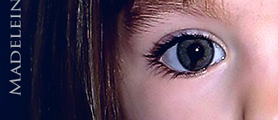
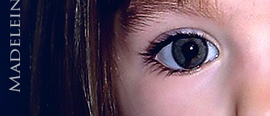

Statements Released by
John Mark Karr
What follows are statements I have released since 2016. When I have anything I consider important to say, I release a statement here. When and if I find out there are lies circulating about me in the media or I have something to say in response to other issues in the media related to me, I release those statements here. On rare occasions, I update statements which is indicated and dated.
Catch Me If You Can - Prepare for a Bloody Battle
A possible present day arrest of JMK will look very different from the 2006 arrest in Bangkok. There will be no more admissions of guilt or talk of loving a little girl and wanting closure for her family by a 'soft spoken school teacher' while he cries in a phone call that's being recorded by U.S. federal agents. The present day version of John Mark Karr is bitter, angry and ready to fight. Today's JMK feels no guilt or compassion or love for any victims or their families. You are all my enemies and I am prepared to conquer you in a bloody battle. (November 28th 2024)
John Ramsey's Damning Allegation
Only recently did I discover that, on October 4th 2023, News Nation's Ashleigh Banfield released a statement on her television broadcast from the father of JonBenet Ramsey. In it, John Ramsey stated he had "pretty strong evidence" that could prove his allegation against me. If that is true, it would be one of the most damning allegations ever brought against me.
Why did I not find out what Ramsey said about me until recently? Contrary to the public's insistence that I am an attention seeking whore who runs around consuming every shred of news about myself, that is simply not true and never has been. I do not read or view any news or social media about myself. I do not Google my name. I do not Google the Colorado girl's name. With that said, I didn't see the News Nation telecast of October 4th, 2023. It took 5 months for just a fraction of the media coverage in October 2023 to trickle down to me through emails and text messages from people in the public who were letting me know what was being said about me.
The most legally damaging statement made about me during the October 2023 media coverage was the final sentence of the statement from John Ramsey released on News Nation. Ramsey said of me, "There is pretty strong evidence that he was stalking our family for a good while prior to JonBenet's murder.”
If John Ramsey can prove that his above accusation is true, it would establish knowledge of the victim well before the fact. It would also establish proximity to the victim well before the fact. Because John Ramsey is the father of the victim, his words are taken more seriously than most. This information, now public, has certainly compromised any possible ongoing investigations against me.
Regardless of such a serious allegation against me concerning the death of his daughter, I still stand behind what I said of him, his wife, and his son in my October 5th, 2023 public statement. However, I must confirm that I was not aware of Ramsey's strong allegation against me just one day before I released my October 5th 2023 statement wherein I devoted a paragraph to him and his family.
Finally, had I known Mr Ramsey made such an allegation against me five months ago, I certainly would have promptly responded exactly as I have today. I will continue my stance to never read any news articles, watch any news videos, or delve into anything said about me on social media or online forums. I do admit, however, that it cripples me in knowing what is said against me so that I might defend myself. But do I really have a defense against damning allegations against me? I think not. This tiny site is seen by a handful of people. The News Nation telecast, along with other international publications that carried this story, were seen by millions. The few people who do visit this site have no regard for anything I might say in my own defense. (March 5th 2024) Read my October 5th, 2023 statement below.
I Know Who JonBenet Ramsey's Killer Was and I'm Protecting Them? Think Again!
A reporter from The U.S. Sun alerted me via e-mail that there was a reporter who had done an interview with News Nation on October 4th, 2023. In it, the reporter stated that I had told him that I knew who killed JonBenet Ramsey and I was protecting them. I have never said anything like that. If you see me on camera, live, making a complete statement, that's not a soundbite, or taken out of context - you can take that seriously. Otherwise, always doubt anything you read or see about me. It is the media's backstabbing technique reserved especially for me as a pure act of sabotage. Do you want truth or some news media hyped concoction?
And who is this person who killed JonBenet Ramsey that all of you in the public and the media insist that I know and now protect? Her brother? Her father? Her loving mother? I know you would love to see but one of them burn for this child's death. I know it because you have expressed it for decades. I have never suggested that anyone in this family was the killer of this little girl. Has this discussion ever come up with those I have spoken to over the years? Of course. The reason being, these three people have been targets for all these years as suspects in their own family member's death. This is not "the moment you've all been waiting for" when I raise my finger of blame and condemnation and point it at any of the members of JonBenet's family.
In 2006, I took full responsibility for the death of JonBenet Ramsey. In an intense phone call with a professor in Boulder Colorado, I described how I killed JonBenet Ramsey, by my own hand. These descriptions corroborated with physical evidence that was withheld from the public by the coroner and law enforcement for ten years. According to the authorities who arrested me, as well as the FBI - it was information only the killer would know. This is why I, and no one else, was arrested for the murder, kidnapping, and sex assault of JonBenet Ramsey. (October 05, 2023 - Updated 12/04/23 to add that an e-mail from a reporter with The U.S. Sun was the source for my reaction. Updated 03/05/24 to clarify a previous misconception of the information that was presented to me.)
New Search in Portugal for Madeleine McCann
Portuguese authorities are conducting new searches for Madeleine McCann at the request of German authorities who named Christian Brueckner as a suspect in her disappearance 3 years ago. Madeleine will not be found. She is a thriving, happy young woman, planning her future. View on  (May 23, 2023)
(May 23, 2023)
Julia Wendelet's Claim that She is Madeleine McCann

On Tuesday 21 February, a contact sent a text message to me containing this news story from KFM 94.5's website entitled, "Is She Madeleine McCann? Polish Woman May Be Missing Toddler From 15 Years Ago." In it, a 21 year old woman named Julia Wendelet is showcased using information from her Instagram account @iammadeleinemccan (note how she misspells 'mccann'). You can be rest assured that Julia Wendelet is not the former Madeleine McCann. Madeleine has never been aware of her connection to the media coverage of the Madeleine McCann case. Has she ever seen it in her lifetime? Possibly, but she has never made any personal connection to the news stories over the years. Those involved in taking her were highly skilled, experienced, and well connected. With that said, consider that Madeleine was very well placed. And if she was very well placed, she was then and will be safe, well cared for, and loved. (February 22, 2023) (Read more in Lei Sussurra's article, Karr Contends Madeleine McCann is Alive)
UPDATE! Julia Faustyna aka Julia Wendelet has been claiming for weeks on Instagram and TikTok that she may be Madeleine McCann. Results of a DNA test show that she is 100% Polish. Madeleine is alive but she'll never be found in a sea of dead ends. (April 5, 2023)
Death Threat E-mail
On January 31st GMT, I received a death threat via e-mail from societysucks88@icloud.com with the subject field: "I want to cut your head off and stuff it up your p**ssy". The e-mail was submitted to the FBI. According to digital forensics, this death threat e-mail was sent from the vicinity of Coeur d’Alene, Idaho. The full name of the sender was included in the e-mail sender field and is listed in my Tweet below. A couple of days after my report, the FBI called my US phone number and left a message stating that they were interested in further details. I returned the FBI's call on the following day. I got an e-mail contact from the agent during the call that enabled me to send further information that might lead to the sender of the e-mail. I take death threats seriously. I will report all threats to the FBI, your local authorities, or both. Full email here. Statement on Twitter here. (February 1st 2023)
My Exit From America in 2020
In early summer 2020, I sold my house in America and left the United States. It was never any secret that my house was on the market for sale last year. At one point, it was listed on the MLS. I owned the house for only two years and ten months. In 2017, after living for only weeks in the house, I was exposed to the media by people I had allowed in my home as guests. I was portrayed by the media and treated by the public as a dangerous threat to society though I had never been convicted of a crime.
After the 2017 media exposure, some asked me why I returned to America in the first place. I returned to the US in 2017 because I had every right to do so. I returned to the US in 2017 and bought a house there because I had every right to live in my own home, in my own country, as a citizen of the United States with full blown constitutional rights that is afforded to every natural born citizen who has never been convicted of a crime.
I had those rights but, while there, that did not prevent some Americans from violating them wholesale - walking by my house shouting "Murderer!", "Killer!", "Serial Killer" and "Child Rapist" mostly occurring in broad daylight as I worked to restore my historical home which remains an asset to the community long after I am gone.
I also had the right to sell my house and leave the United States in peace and in privacy without the media exploiting the event and without the accusation that I was running from something. I guarded the sale of my home when it occurred last year not because I was sneaking around like some lowly criminal but because of my concerns that the media would exploit the sale of the house as they had exploited the purchase of it which would have compromised not only my privacy but the privacy of the new owner of the home.
After discovering recently that certain persons planned on profiting from and exploiting the release of this information, I reluctantly decided to post this statement on my website almost seven months after the fact. I was never then nor am I now in any way obligated to inform you: my haters, my enemies, and to whom it may concern - but here it is nonetheless. (January 13th 2021)
My Brush With Kamala Harris
In 2010, I was accused of everything from felony death threats to being a sex cult leader. Fox News reported that there was a warrant out for my arrest and that the police in San Francisco were looking for me. The media directed their attention to the San Francisco District Attorney's Office that released this statement in response: "At this point, there is no case to review for charging," says spokeswoman Erica Derryck." (Seattle Weekly). The San Francisco district attorney at that time was U.S. Vice President elect Kamala Harris who was not swayed by media pressure, false accusations, or public opinion and expeditiously closed down the rumor that her office had criminally charged me. (November 7th 2020)
Madeleine McCann is Alive

I have been approached for answers about the latest development in the case surrounding Madeleine McCann. The authorities are determined that any pedophile they can prove mere proximity to Madeleine is a prime suspect in this case and worse - a killer of a little girl. This time around, it is imprisoned pedophile, Christian Brückner. He has vowed that he will admit to nothing until authorities can provide proof that he is somehow connected to Madeleine McCann. In other words, he's said a sound "f**k you" to the law who wants to peg him. The truth is, they will not be able to show such proof. He's never met Madeleine because her disappearance had nothing to do with a pedophile imprisoned in Germany or anywhere else in the world. He would, however, make a wonderful fall guy who authorities would not hesitate to elect. Do you want the truth or a poor excuse for it provided to you by out of touch authorities trying to make a name for themselves? Madeleine McCann is alive and well and unaware of the swirl that surrounds her. (June 15th 2020) Read more in Lei Sussurra's article, Karr Contends Madeleine McCann is Alive.
The 2016 DNA Probe
Boulder Police is asking the state to conduct a new round of DNA testing. It's pretty obvious why they should make such a request now. Last month, DNA experts uncovered that the DNA that let me walk in 2006 was a composite of several DNA samples in one. It was also uncovered that Lacy was fully aware that the tiny sample was a composite before she used it to "exonerate" the Ramsey's. The "little DNA that could" is slowly capitulating. A call to the state for a nice replacement has become a necessity for those who insist that this is a DNA case while experts for years have said it is not.
Lacy publicly humiliated me in front of the whole world with her accusation that I was a delusional liar because my DNA didn't match that random, drive-by DNA that established nothing and could never be used to pinpoint any one person, much less a killer. I must admit, I'm sad to see that little DNA sample go. It's been good to me over the years.
I've been asked if I'm worried about this latest DNA development. Of course, I've always had great concerns that my DNA was left behind; however, with the small time local authorities who are in charge of this case along with the corruption that has been proven over the years, I'm not as worried as I would be if it were a valid agency with proper resources, not influenced by wealth or fame or political gain. The day this case falls into the hands of the FBI will be the day I'll have something to worry about. (UPDATE: It was confirmed to me in 2018 by a close contact interviewed by the FBI in 2006, along with a media interview with the FBI in September 2023, that the FBI has investigated me for the murder of JonBenet Ramsey all this time.) (December 15th 2016) - Updated (October 14th, 2023)
Discovery ID Ramsey Television Special
The American public deserves to know that I gave six hours of quality interview time to Discovery in Bangkok on JonBenet's birthday. I revealed new information about JonBenet's death. You will never hear that. I dismantled the DNA. You will never hear that. I talked about how my DNA was taken in 2006 which was a total joke. You will never hear that. I responded to the ridiculous way Mary Lacy mishandled my arrest in 2006. My right to defend myself and tell my side of the story was dumped. Most importantly, I talked about a law that would save children's lives. This was also axed. I feel the American people have the right to know that they were robbed of all this and more by Discovery's decision to merely roll old 2006 footage and call me a lunatic liar. Six hours were reduced to a few sentences spread across three nights. Investigation Discovery used my image and name to promote their show for three nights making promises that, on the third night, there would be an exclusive interview with me. That never happened. Instead, Americans got the dog and pony show. I am receiving hundreds of visits from Americans looking for an answer. You didn't get those answers in the ID exploitation and public humiliation of John Mark Karr. (September 16th 2016)